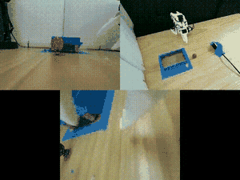
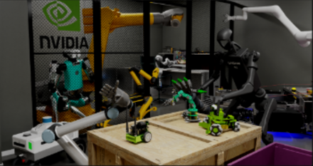

Jacob Guo
Robotics Researcher — Agricultural Robotics & Neural Interfaces
I am a robotics researcher currently at AiForceTech in Beijing, where I work on embodied AI for agricultural robotics. Before that, I spent a year at WAVELETCH designing wearable neural interfaces, and two years as an undergraduate researcher at the NCUT IFR Robotics Lab.
I believe that meaningful progress in robotics comes from closing the loop between simulation and the physical world. My work spans the full stack—from building simulation environments and collecting real-world sensor datasets, to designing and deploying wearable hardware and autonomous field robots. I am particularly drawn to problems where sim-to-real transfer, sensor fusion, and hardware-software co-design intersect.
I share what I learn along the way—my technical blog posts on Isaac Sim, LeRobot, and embodied AI have been read by thousands of fellow engineers and researchers. I am always open to collaboration, new ideas, and opportunities to build things that move and sense the real world.
Embodied AI for agriculture. Building a blueberry-picking robot prototype and its simulation environment with benchmark pipelines in Isaac Sim.
Designed and iterated on wearable EMG sensing hardware for gesture recognition applications.
Undergraduate research in the Intelligent Field Robotics lab. Focused on SLAM and autonomous navigation for mobile robots in unstructured environments.
3DGS-to-USD Pipeline: Built LiDAR acquisition protocol and trained 3D Gaussian Splatting models for agricultural scenes; developed automated PLY-to-USD conversion with spatial filtering, density pruning, and radiance refinement for real-time rendering in Isaac Sim
Robot Kinematics & Compliant Gripper: Full CAD-to-USD conversion of robotic manipulation platform with joint physics, inertia matrices, and flexible-gripper compliance parameters for soft-contact harvesting dynamics
Physics Interaction & PBR: Implemented real-time responsive manipulation of individual blueberry fruits under contact forces; parameterized PBR lighting, dynamic shaders, and material physics (friction, restitution, mass density) to minimize Sim-to-Real gap
Collision Mesh Generation: Built automated Open3D pipeline for Poisson surface reconstruction and mesh simplification from raw 3DGS point clouds, producing watertight low-poly collision geometries for GPU simulation
Mechanical Design: Engineered 8-channel EMG wristband enclosure in Fusion 360, co-optimized with PCB layout
Prototyping & DFM: Managed FDM supply chain, tolerance tuning, and mechanical validation
Cross-functional: Supported algorithm teams during sEMG data acquisition and authored video SOPs
Delivery: 200+ C-end units shipped; 1 utility model patent (pending)
12-DoF Quadruped & 3-Axis Gimbal: Collaborative CAD modeling in Fusion 360 for a 12-DoF quadruped robot and 3-axis UAV stabilizing gimbal; conducted FEA for structural integrity and lightweight topology optimization, validated in national robotics competitions
Wheeled-Bipedal Robot: Spearheaded end-to-end structural architecture, chassis design, and physical fabrication of a wheeled-bipedal prototype; managed internal spatial packaging, electromechanical integration, and wire harness routing
Hardware Prototyping: Proficient with soldering stations, digital multimeters, oscilloscopes, and foundational EDA tools for electronics assembly and troubleshooting
Documentation & Knowledge Base: Authored standardized SOPs for FDM additive manufacturing and CNC milling via Typora and Lark, building core technical assets for the lab's knowledge base
lerobot-dataset-merge
Tools for merging and managing LeRobot datasets.
SO_Cali
Robot calibration and sensor integration toolkit.

A comprehensive walkthrough of the full LeRobot pipeline—from hardware assembly and environment setup to data collection, model training, and real-world inference. Written as a technical memo to help others avoid the same configuration pitfalls and turn debugging time into productive research.

A step-by-step record of configuring Isaac Lab on Windows and Ubuntu 22.04. Covers conda environment activation, pip installation, Windows path-length limits, torchaudio and skrl dependency fixes, VSCode configuration, and running the first RL training job.
With Omniverse Launcher officially deprecated, this guide documents how to manually download Isaac Sim asset packs and configure local paths. Covers multiple approaches including official docs, launcher tweaks, and JSON config edits to get you into robot simulation and RL faster.
Relevant Coursework: Semiconductor Physics, Analog/Digital IC Design, Microfabrication Technology, Embedded Systems.